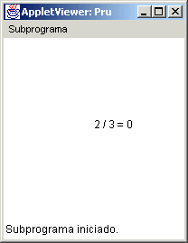
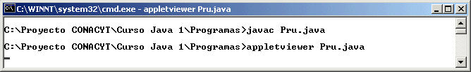
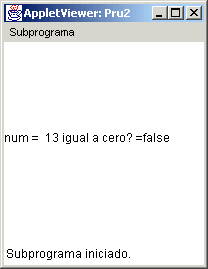
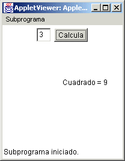
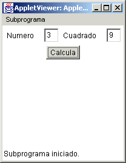
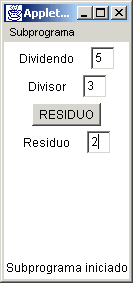
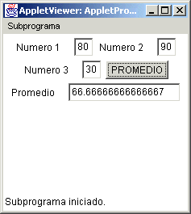

Módulo 1:
Introducción a la Programación Orientada a Objetos 
3. Operaciones Básicas, Operadores y Lectura de Datos.
Operaciones Básicas
En java al igual que en C++ se tienen una serie de operadores que ayudan a obtener cálculos, dependiendo de los valores a utilizar, Java trabaja con los siguientes operadores:
Operadores Aritméticos
|
suma |
|
| % |
|
Todos los operadores que se muestran en esta tabla son binarios; es decir, trabajan con dos operandos. Los operadores +, - y * funcionan de la manera conocida. El operador / funciona de diferente manera si trabaja con datos de tipo entero o de tipo flotante. Con datos de tipo flotante funciona de la manera tradicional; pero al realizarse una división entre dos números enteros, el operador / regresa el cociente de la división entera; es decir, regresa la parte entera del resultado (si hay fracción la elimina). Por ejemplo:
Una manera de visualizar esto es a través de un applet que dibuje el resultado de una operación entera, en este caso utilizaremos el método drawString() como lo hicimos antes, y hacemos uso del operador + que cuando es utilizado despues de un string (cadena de caracteres) en Java funciona como concatenación. Tenemos entonces que la siguiente codificación:
Dará como resultado:  Observa como utilizamos dentro del applet Pru.java
el comentario // <applet width="200" height="200" code="Pru"></applet>  Al estar haciendo operaciones, si hay operandos de diferentes tipos de datos, se convierten al tipo de datos más amplio y el tipo del valor resultante es del tipo más amplio. Por ejemplo, si hay enteros y flotantes, todos los números se convierten a flotantes y el resultado se calcula como flotante. Por ejemplo:
El operador % calcula el residuo de la división entera y sólo existe para datos de tipo entero Por ejemplo:
Otros operadores de Asignación En Java, como en C++, es posible abreviar algunas expresiones de asignación como se muestra en la siguiente tabla: |
|
Operador |
Expresión equivalente |
| v + = e |
v = v + e |
| v - = e |
v = v - e |
| v * = e |
v = v * e |
| v / = e |
v = v / e |
| v % = e |
v = v % e |
Otros Operadores aritméticos
En Java, al igual que en C++, existen también los siguientes operadores aritméticos:
++
incremento
-- decremento
Es decir:
x++
ó ++x es equivalente a x = x+1
x-- ó --x es equivalente a x = x-1
Estos operadores son unitarios, es decir, trabajan con
un solo operando y solamente se pueden utilizar con variables de tipo
entero.
Los operadores se pueden utilizar antes o después del nombre de la variable y funcionan de diferente manera:
-
Si se ponen antes, primero se realiza la operación (incremento o decremento) y luego se utiliza el valor de la variable en la
expresión en la que se encuentre.
-
Si se pone después, primero se utiliza el valor de la variable en la expresión y luego se lleva a cabo la operación (incremento
o decremento).
Por ejemplo:
Supón que a = 10 y c = 4
La operación v = a * c++; v toma el valor de 40 y c queda con el valor de 5
La operación v = a * ++c; v toma el valor de 50 y c queda con el valor de 5
Jerarquía de los operadores aritméticos
|
Prioridad |
Operadores |
Asociatividad |
| 1 | ( ) | Empezando por los paréntesis más internos |
| 2 | ++, --, +(positivo), - (negativo) | De derecha a izquierda, ++ y -- dependiendo de la posición |
| 3 | *,/,% | De izquierda a derecha |
| 4 | +, - | De izquierda a derecha |
| 5 | =,+=,-=,*=, /=,%= | De derecha a izquierda |
Algunos Métodos Matemáticas Predefinidos
Java contiene una serie de métodos matemáticos que puedes utilizar en tus clases, son tomados de la clase Math, esta viene dentro del paquete java.lang, entonces para poder tomarlos dentro de una clase debes de usar import java.lang.Math, algunos de los métodos a utilizar son:
public final static double e da el valor de e.
public final static double PI da el valor de pi.
public static int abs(int a) da el valor absoluto de un entero dado.
public static long abs(float a) da el valor absoluto de un numero de punto flotante.
public static double cos(double a) que te da el coseno de un valor de doble precisión.
public static double exp(double a) te da el valor de ea para un valor a de doble precisión.
public static double pow(double a, double b) te da el valor de ab para a y b de doble precisión.
public static double sqrt(double a) obtiene el valor de la raíz cuadrada de un valor a de doble precisión.
Operadores Relacionales
Los operadores relacionales que tiene Java son :
|
Operador en Java |
Significado |
| == | Igual |
| != | Diferente |
| < | Menor que |
| > | Mayor que |
| <= | Menor o igual que |
| >= | Mayor o igual que |
Operadores Lógicos
Los operadores lógicos que maneja Java son:
|
Operador en C++ |
Significado |
|
|| |
or |
|
&& |
and |
|
! |
not |
Ejemplos de construcción de expresiones boleanas
Java maneja el tipo de variable boolean, el cual puede almacenar un valor de verdadero (true) o de falso (false). Este valor se obtiene de la comparación de valores y el uso de los operadores lógicos revisados anteriormente. A continuación se dan una serie de ejemplos de expresiones.
Expresión para saber si el número asignado a la variable entera num (que tiene un 13) es par:
num % 2 == 0
Esto puede asignarse a una variable boleana y visualizarse en un applet para entender como funciona:

El applet correspondiente sería:
import java.awt.*;
import java.applet.*;
// <applet width="200" height="200" code="Pru2"></applet>
public class Pru2 extends Applet {
public void paint(Graphics g) {
boolean b;
int num = 13;
b = num % 2 == 0;
g.drawString("num = "+num + " igual a cero? =" + b, 0, 100);
}
}
Expresión para saber si un número A está en el rango 5 a 300 incluyendo los extremos
num > = 5
&& num <=300
Lectura de Datos
Dentro de un applet es sencillo tomar algún dato del usuario para realizar algún cálculo, esto se hace a través de crear un objeto de la clase TextField, el cual sirve para que el usuario telcee algun dato, dentro de la clase TextField existen diferentes métodos, es necesario utilizar el método getText() para tomar el dato del usuario y este método regresa un objeto de la clase String (cadena de caracteres), el cual se debe pasar a entero o número de punto flotante, utilizando la clase Integer o utilizando la clase Double.
Dentro de un Applet el método paint nos sirve para dibujar, en el constructor creamos objetos de la clases de elementos de interfaz gráfica, como TextField, TextArea, Label, Button, etc.
Cuando tomamos un dato del usuario, la manera que este le dice al applet que ya ha introducido el dato y quiere hacer el cálculo es dando un clic a un botón, el cual es creado dentro del applet por medio de la clase Button, para poder introducir las instrucciones para hacer algún cálculo cuando el usuario ya dio clic en el botón, debemos introducir éstas en el método actionPerformed, este método pertenece a la clase ActionListener, es entonces que la clase de aplicación que hereda del applet, debe implementar la clase ActionListener para poder utilizar este método y dar instrucciones para cuando se da clic en el botón.
Presentaremos un applet sencillo en el que se toma un número del usuario y cuando el de un clic aparecerá el cuadrado de ese número dibujado:
import java.awt.*;
import java.applet.*;
import java.awt.event.*;
// <applet width="200" height="200" code="AppletDaCuadrado"></applet>
public class AppletDaCuadrado extends Applet implements ActionListener {
TextField t;
Button b;
public AppletDaCuadrado() {
t = new TextField();
b = new Button("Calcula");
add(t);
add(b);
b. addActionListener(this);
}
public void paint(Graphics g) {
int num = Integer.parseInt(t.getText());
g.drawString("Cuadrado = "+num*num, 100, 100);
}
public void actionPerformed(ActionEvent ae) {
repaint();
}
}
La manera en la que se presenta este applet es la siguiente:

Analicemos un poco esto a detalle, la clase Applet tiene el método paint para dibujar, y el método actionPerformed() para llevar a cabo las instrucciones cuando alguna acción se de, en este caso se haga clic en un botón. Para poder hacer que un applet tenga elementos de interfaz gráfica, estos deben ser creados utilizando la clase deseada (TextField, TextArea, Button, etc) y deben ser añadidos a la aplicación a través del método add (para que aparezcan en la ventana del applet), todo esto se hace en el constructor del applet, de esa manera cuando se ejecute el applet, se crean los objetos de interfaz gráfica y se presentan en la ventana del applet.
La manera en la que se pueda hacer para que se ejecute alguna instrucción, con la acción de un botón, es primero añadirlo, pero además hacer que este elemento pueda ser escuchado, es decir saber cuando el usuario da un clic en el, al momento de estar ejecutando el applet, esto se hace a través del método addActionListener(this), en la línea
b.addActionListener(this);
Aqui estamos diciendo que el botón debe ser escuchado en este clase de aplicación, de este manera cuando el usuario de un clic, entonces el control de la aplicación pasara al método actionPerformed() y se ejecutarán las intrucciones puestas en el.
repaint();
Esta instrucción lo que hace es hacer que se vuelva a ejecutar el método paint(), para que aparezca el mensaje Cuadrado = y el valor del cuadrado del número dado. Ahora porque tenemos que hacer esto, debido a que el método paint() solo se ejecuta cuando se mueve la ventana del applet, cuando se abre y se cierra, pero no en todo momento, entonces el método repaint() nos sirve para que se repinte lo que queremos y en este caso cuando el usuario de un clic en el botón.
Utilizamos el método parseInt() de la clase Integer para poder pasar el valor String (cadena de caracteres) del texto que tiene el número dado por el usuario, a un número entero que pueda servirnos posteriormente para hacer algún cálculo.
Ahora la realidad es que el método paint es para dibujar y no para dar respuestas a cálculos, entonces lo mejor seria no utilizar el método paint() en este caso, sino utilizar otros elementos de interfaz gráfica para mostrar los cálculos, esto será en el siguiente applet:
import java.awt.*;
import java.applet.*;
import java.awt.event.*;
import java.lang.Math;
// <applet width="200" height="200" code="AppletCuadrado"></applet>
public class AppletCuadrado extends Applet implements ActionListener {
Label l1, l2;
TextField t1, t2;
Button b;
public AppletCuadrado() {
l1 = new Label("Numero");
t1 = new TextField();
l2 = new Label("Cuadrado");
t2 = new TextField();
b = new Button("Calcula");
add(l1);
add(t1);
add(l2);
add(t2);
add(b);
b. addActionListener(this);
}
public void actionPerformed(ActionEvent ae) {
double num = Double.parseDouble(t1.getText());
t2.setText(""+Math.pow(num,2.0));
}
}
El cual al ejecutar muestra lo siguiente:

Utilizamos el método parseDouble de la clase Double, para pasar de un String a un valor primitivo de doble precisión (como lo hicimos en el ejemplo anterior con un entero), usamos un valor de doble precisión, porque ahora hicimos uso del método pow() de la clase Math, para hacer el cálculo del cuadrado. Ahora no hacemos uso del método paint(), y utilizamos el método setText() para poder pasar el valor calculado al objeto de la clase TextField, todo esto se hace dentro del método actionPerformed() y como no se esta dibujando el resultado, no tenemos que hacer uso del método paint() o repaint().
El uso del método pow() se hace tomando solo el nombre de la clase Math, haciendo Math.pow(num, 2.0), esto se hace debido a que el método es estático, lo cual significa que el método se usa sin tener que crear un objeto de la clase Math, solo haciendo uso del nombre de la clase antes del método.
En esta clase tambien hicimos uso de objetos de la clase Label, para poder definir que es lo que estará en el texto de enseguida.

2. Crea un applet que tome los datos de tres campos texto (TextField) y obtenga el promedio de los tres números y lo coloque en un cuarto texto (Text Field), los tres campos tomaran números que serán de punto flotante, como lo muestra la figura:

http://java.sun.com/docs/books/tutorial/java/nutsandbolts/relational.html
http://java.sun.com/j2se/1.4.2/docs/api/index.html buscar Math, Integer, Double.